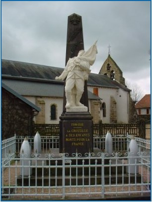

Ce site raconte l'histoire ordinaire de trois frères, trois paysans, trois soldats durant la guerre de 14-18.
Il a été créé sur la base de leur correspondance avec leurs soeurs restées à la ferme durant le conflit.
Deux frères reviendront blessés et le troisième tombera au combat à la bataille de Verdun en 1916. Leur correspondance est composée
d'environ 400 cartes postales, chaque carte postale est à la fois le miroir de la propagande de guerre, mais également le révélateur
des sentiments des frères partis à la guerre et des angoisses de leurs soeurs restées au pays.
L'une des quatre soeurs s'appelle Léa. Léa est ma grand-mère maternelle et cette histoire revêt donc une importance
tout à fait particulière à mes yeux et mon coeur.
En France, chaque village a son monument aux morts, chaque monument au mort a sa liste de soldats tombés à la guerre de 14-18, et derrière chaque nom se cache une histoire et une famille. Ces monuments font partie du
paysage
et on est tellement habitué à les voir qu’on ne les voit plus. Bien sûr, on nous apprend l’histoire de la grande Guerre à l’école et on a une pensée un peu plus marquée pour cette période tous les jours de 11 Novembre, mais comme dit la
chanson,
on y pense et puis on oublie.
On y pense et puis on oublie, parce que c’est loin dans le temps et que malheureusement la guerre de 14 apparait aujourd’hui comme un autre épisode sanglant dans le long cortège d’atrocités du siècle précédent. Mais on
oublie
surtout parce qu’il nous est quelquefois difficile de se sentir intimement concerné, ne l’ayant pas vécu dans notre propre chair et les acteurs de l’époque ayant disparu depuis longtemps.
C’est cette touche personnelle qu’apporte la correspondance des soldats avec leurs sœurs, ce sont leurs mots simples et le non-dit de leurs lettres qui nous aident à mieux comprendre le vécu de cette époque. L’Auvergnat
est économe de mots et certains disent qu’il peut-être taiseux et c’est justement cela qui donne autant de poids aux paroles des frères.

Jeunes hommes simples, honnêtes et durs à la tâche, Gabriel, Auguste et Antoine ne se plaignent jamais et s’efforcent de rassurer la famille. Jeunes filles robustes, résilientes et d’une grande foi, Marie et Maria
cachent leurs angoisses au mieux. Encore petites, Augustine et Lea prient pour le retour de leurs frères et aident maladroitement au travail de la ferme.
Quand on lit cette correspondance et qu’on la met en perspective avec les récits et la littérature de l’Après-Guerre, on a alors un éclairage complet sur l’expérience des soldats au front et des familles à l’arrière. La
littérature nous aide à mieux comprendre ce que les frères gardent cachés et la correspondance donne soudainement un relief particulier à cette littérature et une intimité unique avec les textes.
Mais quand on se penche sur cette époque, pour mieux la comprendre, il faut tenter de la lire avec les préjugés et les idées reçues du début du siècle précédent. Tout cela dans une atmosphère envahissante de propagande et un carcan d'éducation bien serré. Nous, nous savons les conséquences et l'horreur de cette guerre et de celle qui suivra - notre système de valeurs est en grande partie le fruit du rejet de ces deux conflits. Eux, ils n'en savent rien encore et n'apportent sans doute pas le même regard sur leur expérience.
Traditionnellement, on voyage peu à la campagne, tout simplement parce que l’on a pas besoin de le faire et que toute la vie se passe au village et ses alentours. Quand on le fait, quant on voit du pays, c’est
une expérience non seulement pour celui ou celle qui part, mais aussi pour ceux qui restent à la ferme.
Le service militaire est bien souvent la première et unique raison de partir loin, et la guerre sera également un incroyable catalyste pour découvrir des contrées plus lointaines. Ainsi, les cartes envoyées par
les trois frères sont révélatrices à deux titres, leur écrit mais également les images qu’ils choisissent. On ne peut qu’imaginer avec quelle curiosité et excitation ces images étaient analysées dans les moindres détails par les sœurs les
plus jeunes.
Toute la famille vivant au hameau des Raynauds, il n’y a pas de correspondance entre frères et sœurs pour cette période. Les quelques cartes postales disponibles, souvent écrites entre amies, donnent
cependant quelques indications sur la vie quotidienne de la famille – une vie sans souçis majeurs, avec les préoccupations traditionnelles de jeunes filles dans leur vingt-ans pour Marie et Maria …
Pour Augustine et Maria, ce sont les années d'école primaire à l'Institut du Sacré Coeur de Montaigut en Combraille. Elles y reçoivent une éducation robuste, mais gare aux fautes d'orthographe ...
Le Service Militaire de Gabriel
C’est un évènement majeur dans la vie de la famille, et un véritable rite de passage pour les trois garçons. Gabriel commence son service en 1909, il est basé à Roanne. Il écrit principalement à
Augustine et Léa qui sont encore toutes petites (elles ont huit ans) et elles s’appliquent également à écrire leurs propres cartes …
Auguste et Antoine partent en 1913 pour Epinal. On voyage peu à cette époque, et c’est l’occasion de voir du pays ce qui donne lieu à une correspondance fournie. Il est clair qu’Augustine et Léa
adorent recevoir ses images de contrées lointaines …
La Mobilisation
La mobilisation est proclamée le 1er Août 1914, au pire moment pour les paysans, juste avant les moissons. Gabriel rejoint immédiatement le dépôt de son régiment à Roanne, Auguste et Antoine sont alors
au service militaire à Epinal et se voient engagés dans la guerre sans délai. Les trois frères participent très tôt aux combats et les évènements s’enchaînent à grande vitesse tout au long du mois d’août. A la ferme, ne restent que le
père, la mère et les sœurs pour s’occuper de l’exploitation …
Incorporés dans l’infanterie, les trois frères sont en première ligne dans une guerre de mouvement destinée à arrêter le mouvement des troupes allemandes. Auguste est le premier à être blessé dès la
fin du mois d’Août, puis ce sera le tour de Gabriel et Antoine peu après dans les premières semaines de Septembre. Chacune de ces blessures aura une importance primordiale sur le destin des trois hommes …
Pendant une courte période, les trois frères se retrouvent ensemble à Lyon et décrivent leur convalescence à la famille inquiète. Gabriel est le premier rétabli et sera le premier à retourner au front.
Auguste et Antoine restent à Lyon, bien qu´ Auguste sera bientôt affecté comme convoyeur à l’arrière avant de repartir lui-aussi pour le front. Antoine, plus sérieusement blessé, ne retournera pas au feu mais découvrira l’usine …
Gabriel et Auguste retrouvent une guerre bien différente, c’est maintenant une guerre de position et le conflit s’est enlisé. Ils parlent à demi-mots de leur expérience dans les tranchées et tâchent
d’envoyer des messages rassurants aux parents et sœurs. Comme leurs cartes postales et les journeaux de marche de leur régiments en témoignent, ils alternent alors présence au feu en première ligne, période de repos en cantonnement et
déplacements des troupes le long du front. La lassitude s’installe et quelquefois, entre camarades de guerre, ils expriment leur frustration …
Cette guerre brise les hommes, mais elle brise aussi les cœurs. Difficile d’en être sûr, mais une correspondance entre Maria (alors dans ses vingt ans) et un autre soldat semble suggérer le début d’une
idylle interrompue par le conflit. On y décèle plus de tendresse, tout cela voilé par beaucoup de pudeur. Est-ce un rendez-vous manqué ?….
Gabriel est mort, Antoine est toujours à Lyon en convalescence, mais Auguste est au front. Exposé au danger lui aussi à Verdun, il est blessé une deuxième fois, un an jour pour jour après sa première
blessure …
Commence une nouvelle période de convalescence au terme de laquelle Auguste rentre à la maison comme son frère Antoine. Au cours de cette période, la correspondance d’Auguste nous fait découvrir
d’autres lieux de passage de la Creuse et de l’Allier …
La guerre finie et les deux frères jumeaux revenus au village, la correspondance devient plus éparse mais les quelques cartes conservées montrent un retour au cours normal des choses. Avec quelques
références cependant à l’épidémie du moment, la grippe espagnole …